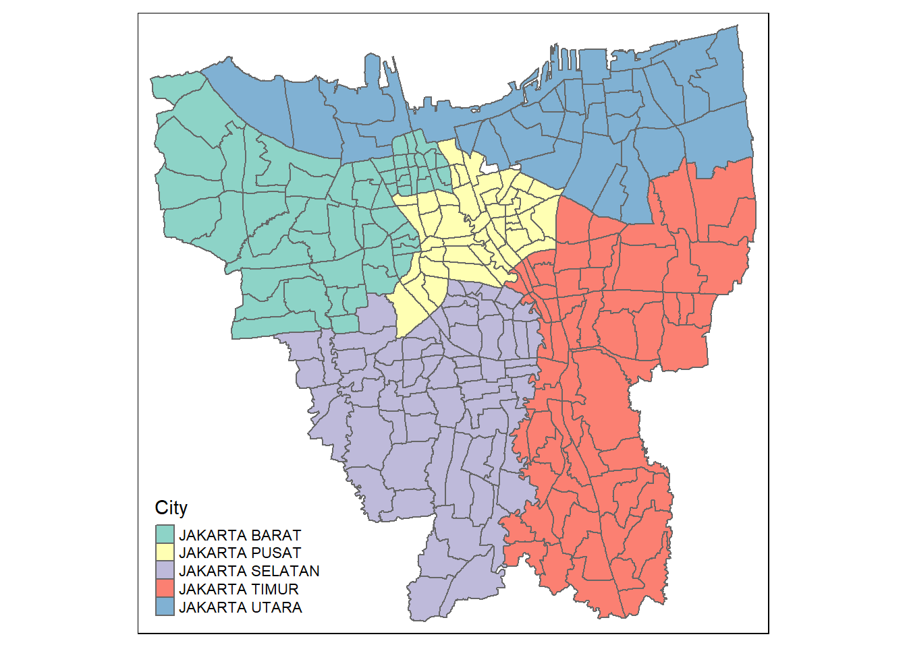

pacman::p_load(sf, sfdep, tmap, maptools, tidyverse, knitr, readxl)Take-Home_Ex02
1 Overview
1.1 Context
As a result of the COVID-19 outbreak in Indonesia, a widespread immunization campaign is currently being conducted there. The program was launched on January 13, 2021, when President Joko Widodo had his vaccination at the presidential palace. Indonesia is ranked third in Asia and fifth overall for total dosages administered.
Wikipedia states that as of February 5, 2023, at 18:00 WIB (UTC+7), 204,266,655 individuals had received the first dose of the vaccine and 175,131,893 individuals had received the full course of vaccination; 69,597,474 of these individuals had received the booster dose or third dose, and 1,585,164 had received the fourth dose. With 103.46% of the population fully immunized, Jakarta has the highest rate, followed by Bali and the Special Region of Yogyakarta with 85.45% and 83.02%, respectively.
1.2 Objectives
Exploratory Spatial Data Analysis (ESDA) hold tremendous potential to address complex problems facing society. In this study, you are tasked to apply appropriate Local Indicators of Spatial Association (LISA) and Emerging Hot Spot Analysis (EHSA) to undercover the spatio-temporal trends of COVID-19 vaccination in DKI Jakarta.
1.3 Task
Choropleth Mapping and Analysis
Compute the monthly vaccination rate from July 2021 to June 2022 at sub-district (also known as kelurahan in Bahasa Indonesia) level,
Prepare the monthly vaccination rate maps by using appropriate tmap functions,
Describe the spatial patterns revealed by the choropleth maps (not more than 200 words).
1.4 Data used
| Type | Name | Format | Description | Source |
|---|---|---|---|---|
| Aspatial | Riwayat File Vaksinasi DKI Jakarta | csv | Daily vaccination data | Open Data Vaksinasi Provinsi DKI Jakarta |
| Geospatial | DKI Jakarta administration boundary 2019 | SHP | geoBoundaries data of Jakarta | Indonesia Geospatial |
For the Aspatial Data, I decided to use the dataset available on 1st Sept 2022 for this exercise.
1.5 Packages used
For this exercise, we’ll be using the following packages:
sf: Manage and process vector-based geospatial data in R
sfdep:
maptools: Convert Spatial objects into ppp format of spatstat
tmap: Plotting cartographic quality static point patterns maps or interactive maps by using leaflet API
tidyverse: a collection of functions, data, and documentation that extends the capabilities of base R.
knitr:
readxl: The readxl package makes it easy to get data out of Excel and into R
We will be using p_load function of pacman package to install and load required packages.
2 Data wrangling: Geospatial data
2.1 Importing Geospatial
jkt <- st_read(dsn = "data/geospatial/BATAS DESA DESEMBER 2019 DUKCAPIL DKI JAKARTA",
layer = "BATAS_DESA_DESEMBER_2019_DUKCAPIL_DKI_JAKARTA")Reading layer `BATAS_DESA_DESEMBER_2019_DUKCAPIL_DKI_JAKARTA' from data source
`C:\kt-x\is415-GAA\Take-Home_Ex\Take-Home_Ex02\data\geospatial\BATAS DESA DESEMBER 2019 DUKCAPIL DKI JAKARTA'
using driver `ESRI Shapefile'
Simple feature collection with 269 features and 161 fields
Geometry type: MULTIPOLYGON
Dimension: XY
Bounding box: xmin: 106.3831 ymin: -6.370815 xmax: 106.9728 ymax: -5.184322
Geodetic CRS: WGS 84glimpse(jkt)Rows: 269
Columns: 162
$ OBJECT_ID <dbl> 25477, 25478, 25397, 25400, 25378, 25379, 25390, 25382, 253…
$ KODE_DESA <chr> "3173031006", "3173031007", "3171031003", "3171031006", "31…
$ DESA <chr> "KEAGUNGAN", "GLODOK", "HARAPAN MULIA", "CEMPAKA BARU", "PU…
$ KODE <dbl> 317303, 317303, 317103, 317103, 310101, 310101, 317102, 310…
$ PROVINSI <chr> "DKI JAKARTA", "DKI JAKARTA", "DKI JAKARTA", "DKI JAKARTA",…
$ KAB_KOTA <chr> "JAKARTA BARAT", "JAKARTA BARAT", "JAKARTA PUSAT", "JAKARTA…
$ KECAMATAN <chr> "TAMAN SARI", "TAMAN SARI", "KEMAYORAN", "KEMAYORAN", "KEPU…
$ DESA_KELUR <chr> "KEAGUNGAN", "GLODOK", "HARAPAN MULIA", "CEMPAKA BARU", "PU…
$ JUMLAH_PEN <dbl> 21609, 9069, 29085, 41913, 6947, 7059, 15793, 5891, 33383, …
$ JUMLAH_KK <dbl> 7255, 3273, 9217, 13766, 2026, 2056, 5599, 1658, 11276, 128…
$ LUAS_WILAY <dbl> 0.36, 0.37, 0.53, 0.97, 0.93, 0.95, 1.76, 1.14, 0.47, 1.31,…
$ KEPADATAN <dbl> 60504, 24527, 54465, 42993, 7497, 7401, 8971, 5156, 71628, …
$ PERPINDAHA <dbl> 102, 25, 131, 170, 17, 26, 58, 13, 113, 178, 13, 87, 56, 12…
$ JUMLAH_MEN <dbl> 68, 52, 104, 151, 14, 32, 36, 10, 60, 92, 5, 83, 21, 70, 93…
$ PERUBAHAN <dbl> 20464, 8724, 27497, 38323, 6853, 6993, 15006, 5807, 31014, …
$ WAJIB_KTP <dbl> 16027, 7375, 20926, 30264, 4775, 4812, 12559, 3989, 24784, …
$ SILAM <dbl> 15735, 1842, 26328, 36813, 6941, 7057, 7401, 5891, 23057, 2…
$ KRISTEN <dbl> 2042, 2041, 1710, 3392, 6, 0, 3696, 0, 4058, 5130, 1, 3061,…
$ KHATOLIK <dbl> 927, 1460, 531, 1082, 0, 0, 1602, 0, 2100, 2575, 0, 1838, 7…
$ HINDU <dbl> 15, 9, 42, 127, 0, 0, 622, 0, 25, 27, 0, 9, 115, 47, 382, 7…
$ BUDHA <dbl> 2888, 3716, 469, 495, 0, 2, 2462, 0, 4134, 4740, 5, 1559, 3…
$ KONGHUCU <dbl> 2, 1, 5, 1, 0, 0, 10, 0, 9, 10, 0, 4, 1, 1, 4, 0, 2, 0, 0, …
$ KEPERCAYAA <dbl> 0, 0, 0, 3, 0, 0, 0, 0, 0, 0, 0, 2, 0, 22, 0, 3, 3, 0, 0, 0…
$ PRIA <dbl> 11049, 4404, 14696, 21063, 3547, 3551, 7833, 2954, 16887, 1…
$ WANITA <dbl> 10560, 4665, 14389, 20850, 3400, 3508, 7960, 2937, 16496, 1…
$ BELUM_KAWI <dbl> 10193, 4240, 14022, 20336, 3366, 3334, 7578, 2836, 15860, 1…
$ KAWIN <dbl> 10652, 4364, 13450, 19487, 3224, 3404, 7321, 2791, 15945, 1…
$ CERAI_HIDU <dbl> 255, 136, 430, 523, 101, 80, 217, 44, 381, 476, 39, 305, 10…
$ CERAI_MATI <dbl> 509, 329, 1183, 1567, 256, 241, 677, 220, 1197, 993, 79, 90…
$ U0 <dbl> 1572, 438, 2232, 3092, 640, 648, 802, 585, 2220, 2399, 376,…
$ U5 <dbl> 1751, 545, 2515, 3657, 645, 684, 995, 588, 2687, 2953, 331,…
$ U10 <dbl> 1703, 524, 2461, 3501, 620, 630, 1016, 513, 2653, 2754, 309…
$ U15 <dbl> 1493, 521, 2318, 3486, 669, 671, 1106, 548, 2549, 2666, 328…
$ U20 <dbl> 1542, 543, 2113, 3098, 619, 609, 1081, 491, 2313, 2515, 290…
$ U25 <dbl> 1665, 628, 2170, 3024, 639, 582, 1002, 523, 2446, 2725, 325…
$ U30 <dbl> 1819, 691, 2363, 3188, 564, 592, 1236, 478, 2735, 3122, 329…
$ U35 <dbl> 1932, 782, 2595, 3662, 590, 572, 1422, 504, 3034, 3385, 317…
$ U40 <dbl> 1828, 675, 2371, 3507, 480, 486, 1200, 397, 2689, 3037, 250…
$ U45 <dbl> 1600, 607, 2250, 3391, 421, 457, 1163, 365, 2470, 2597, 206…
$ U50 <dbl> 1408, 619, 1779, 2696, 346, 369, 1099, 288, 2129, 2282, 134…
$ U55 <dbl> 1146, 602, 1379, 1909, 252, 318, 979, 235, 1843, 1930, 129,…
$ U60 <dbl> 836, 614, 1054, 1397, 197, 211, 880, 162, 1386, 1394, 75, 9…
$ U65 <dbl> 587, 555, 654, 970, 122, 114, 747, 111, 958, 932, 50, 706, …
$ U70 <dbl> 312, 311, 411, 631, 69, 55, 488, 65, 554, 573, 38, 412, 129…
$ U75 <dbl> 415, 414, 420, 704, 74, 61, 577, 38, 717, 642, 37, 528, 125…
$ TIDAK_BELU <dbl> 3426, 1200, 4935, 7328, 1306, 1318, 2121, 973, 5075, 6089, …
$ BELUM_TAMA <dbl> 1964, 481, 2610, 3763, 730, 676, 1278, 732, 3241, 3184, 383…
$ TAMAT_SD <dbl> 2265, 655, 2346, 2950, 1518, 2054, 1169, 1266, 4424, 3620, …
$ SLTP <dbl> 3660, 1414, 3167, 5138, 906, 1357, 2236, 852, 5858, 6159, 5…
$ SLTA <dbl> 8463, 3734, 12172, 16320, 2040, 1380, 5993, 1570, 12448, 14…
$ DIPLOMA_I <dbl> 81, 23, 84, 179, 22, 15, 43, 36, 85, 83, 4, 63, 27, 79, 110…
$ DIPLOMA_II <dbl> 428, 273, 1121, 1718, 101, 59, 573, 97, 604, 740, 25, 734, …
$ DIPLOMA_IV <dbl> 1244, 1241, 2477, 4181, 314, 191, 2199, 357, 1582, 1850, 83…
$ STRATA_II <dbl> 74, 46, 166, 315, 10, 8, 168, 8, 63, 92, 5, 174, 125, 122, …
$ STRATA_III <dbl> 4, 2, 7, 21, 0, 1, 13, 0, 3, 9, 0, 16, 8, 7, 75, 49, 65, 14…
$ BELUM_TIDA <dbl> 3927, 1388, 5335, 8105, 1788, 1627, 2676, 1129, 5985, 6820,…
$ APARATUR_P <dbl> 81, 10, 513, 931, 246, 75, 156, 160, 132, 79, 23, 145, 369,…
$ TENAGA_PEN <dbl> 70, 43, 288, 402, 130, 93, 81, 123, 123, 73, 45, 109, 30, 1…
$ WIRASWASTA <dbl> 8974, 3832, 10662, 14925, 788, 728, 6145, 819, 12968, 14714…
$ PERTANIAN <dbl> 1, 0, 1, 3, 2, 2, 1, 3, 2, 5, 1, 1, 0, 0, 2, 5, 2, 1, 13, 4…
$ NELAYAN <dbl> 0, 0, 2, 0, 960, 1126, 1, 761, 1, 2, 673, 0, 0, 0, 0, 0, 2,…
$ AGAMA_DAN <dbl> 6, 6, 5, 40, 0, 0, 49, 2, 10, 11, 0, 54, 15, 16, 21, 14, 17…
$ PELAJAR_MA <dbl> 4018, 1701, 6214, 9068, 1342, 1576, 3135, 1501, 6823, 6866,…
$ TENAGA_KES <dbl> 28, 29, 80, 142, 34, 26, 60, 11, 48, 55, 16, 68, 89, 93, 28…
$ PENSIUNAN <dbl> 57, 50, 276, 498, 20, 7, 59, 14, 56, 75, 2, 97, 53, 146, 57…
$ LAINNYA <dbl> 4447, 2010, 5709, 7799, 1637, 1799, 3430, 1368, 7235, 7206,…
$ GENERATED <chr> "30 Juni 2019", "30 Juni 2019", "30 Juni 2019", "30 Juni 20…
$ KODE_DES_1 <chr> "3173031006", "3173031007", "3171031003", "3171031006", "31…
$ BELUM_ <dbl> 3099, 1032, 4830, 7355, 1663, 1704, 2390, 1213, 5330, 5605,…
$ MENGUR_ <dbl> 4447, 2026, 5692, 7692, 1576, 1731, 3500, 1323, 7306, 7042,…
$ PELAJAR_ <dbl> 3254, 1506, 6429, 8957, 1476, 1469, 3185, 1223, 6993, 6858,…
$ PENSIUNA_1 <dbl> 80, 65, 322, 603, 24, 8, 70, 20, 75, 97, 2, 132, 67, 165, 6…
$ PEGAWAI_ <dbl> 48, 5, 366, 612, 223, 72, 65, 143, 73, 48, 15, 89, 91, 174,…
$ TENTARA <dbl> 4, 0, 41, 57, 3, 0, 74, 1, 20, 12, 2, 11, 90, 340, 41, 52, …
$ KEPOLISIAN <dbl> 10, 1, 16, 42, 11, 8, 2, 9, 17, 7, 3, 9, 165, 15, 17, 28, 1…
$ PERDAG_ <dbl> 31, 5, 1, 3, 6, 1, 2, 4, 3, 1, 4, 0, 1, 2, 9, 2, 8, 2, 5, 9…
$ PETANI <dbl> 0, 0, 1, 2, 0, 1, 1, 0, 1, 1, 1, 2, 0, 0, 1, 2, 0, 1, 6, 1,…
$ PETERN_ <dbl> 0, 0, 0, 0, 0, 0, 0, 1, 0, 0, 0, 0, 0, 0, 0, 0, 0, 0, 0, 0,…
$ NELAYAN_1 <dbl> 1, 0, 1, 0, 914, 1071, 0, 794, 0, 1, 663, 0, 0, 0, 0, 0, 2,…
$ INDUSTR_ <dbl> 7, 3, 4, 3, 1, 3, 0, 0, 1, 7, 0, 0, 2, 2, 1, 3, 12, 1, 8, 4…
$ KONSTR_ <dbl> 3, 0, 2, 6, 3, 8, 1, 6, 1, 5, 10, 0, 2, 5, 7, 4, 7, 1, 6, 2…
$ TRANSP_ <dbl> 2, 0, 7, 4, 0, 0, 0, 0, 0, 3, 0, 0, 0, 0, 6, 3, 2, 1, 2, 5,…
$ KARYAW_ <dbl> 6735, 3034, 7347, 10185, 237, 264, 4319, 184, 9405, 10844, …
$ KARYAW1 <dbl> 9, 2, 74, 231, 4, 0, 16, 1, 13, 10, 1, 24, 17, 29, 187, 246…
$ KARYAW1_1 <dbl> 0, 0, 5, 15, 0, 0, 0, 1, 0, 1, 0, 0, 2, 4, 7, 9, 3, 1, 6, 5…
$ KARYAW1_12 <dbl> 23, 4, 25, 35, 141, 50, 16, 157, 6, 9, 40, 11, 11, 15, 22, …
$ BURUH <dbl> 515, 155, 971, 636, 63, 218, 265, 55, 1085, 652, 17, 357, 2…
$ BURUH_ <dbl> 1, 0, 0, 0, 2, 1, 1, 0, 0, 1, 1, 0, 0, 0, 1, 2, 1, 0, 1, 1,…
$ BURUH1 <dbl> 0, 0, 1, 0, 1, 25, 0, 2, 0, 1, 1, 0, 0, 0, 0, 0, 0, 0, 0, 0…
$ BURUH1_1 <dbl> 0, 0, 0, 0, 0, 0, 0, 0, 0, 0, 0, 0, 0, 0, 0, 0, 0, 0, 1, 0,…
$ PEMBANT_ <dbl> 1, 1, 4, 1, 1, 0, 7, 0, 5, 1, 0, 6, 1, 10, 11, 9, 8, 3, 4, …
$ TUKANG <dbl> 0, 0, 0, 0, 0, 0, 0, 0, 0, 1, 0, 0, 0, 0, 0, 1, 0, 0, 0, 0,…
$ TUKANG_1 <dbl> 1, 0, 0, 0, 0, 0, 0, 0, 0, 0, 0, 0, 0, 0, 0, 0, 0, 0, 0, 0,…
$ TUKANG_12 <dbl> 0, 0, 0, 0, 0, 0, 0, 0, 0, 0, 0, 0, 0, 0, 0, 0, 0, 0, 0, 0,…
$ TUKANG__13 <dbl> 1, 1, 0, 1, 0, 1, 0, 0, 0, 1, 0, 0, 0, 1, 1, 0, 0, 0, 0, 0,…
$ TUKANG__14 <dbl> 0, 0, 0, 0, 0, 0, 0, 0, 0, 0, 0, 0, 0, 0, 0, 0, 0, 0, 0, 0,…
$ TUKANG__15 <dbl> 1, 0, 0, 1, 0, 0, 0, 0, 0, 1, 0, 0, 0, 0, 0, 0, 0, 0, 1, 1,…
$ TUKANG__16 <dbl> 7, 4, 10, 14, 0, 0, 2, 0, 7, 8, 0, 8, 1, 0, 3, 2, 2, 0, 17,…
$ TUKANG__17 <dbl> 1, 0, 0, 0, 0, 0, 0, 0, 0, 1, 0, 0, 0, 0, 0, 0, 0, 0, 0, 0,…
$ PENATA <dbl> 0, 0, 0, 0, 0, 0, 1, 0, 0, 0, 0, 0, 1, 0, 0, 0, 0, 0, 0, 0,…
$ PENATA_ <dbl> 0, 0, 0, 0, 0, 0, 0, 0, 0, 0, 0, 0, 0, 0, 0, 0, 0, 0, 0, 0,…
$ PENATA1_1 <dbl> 0, 0, 0, 1, 0, 0, 0, 0, 0, 1, 0, 2, 0, 1, 0, 0, 0, 0, 0, 0,…
$ MEKANIK <dbl> 11, 1, 10, 8, 0, 0, 4, 0, 7, 8, 0, 9, 0, 15, 10, 10, 3, 0, …
$ SENIMAN_ <dbl> 4, 0, 12, 28, 0, 0, 2, 0, 3, 4, 0, 9, 6, 7, 14, 13, 17, 22,…
$ TABIB <dbl> 1, 0, 0, 0, 0, 0, 1, 0, 0, 1, 0, 0, 0, 0, 0, 1, 0, 0, 0, 0,…
$ PARAJI_ <dbl> 0, 0, 0, 0, 0, 0, 0, 0, 0, 0, 0, 0, 0, 0, 0, 0, 0, 0, 0, 0,…
$ PERANCA_ <dbl> 0, 0, 0, 0, 0, 0, 0, 0, 0, 0, 0, 1, 0, 2, 1, 0, 1, 2, 0, 0,…
$ PENTER_ <dbl> 1, 0, 0, 0, 0, 0, 1, 0, 0, 0, 0, 0, 0, 0, 2, 0, 2, 0, 0, 0,…
$ IMAM_M <dbl> 0, 0, 0, 0, 0, 0, 0, 0, 0, 0, 0, 0, 0, 0, 0, 0, 0, 0, 0, 0,…
$ PENDETA <dbl> 2, 4, 5, 33, 0, 0, 20, 0, 10, 8, 0, 30, 14, 14, 18, 12, 1, …
$ PASTOR <dbl> 0, 1, 0, 1, 0, 0, 8, 0, 0, 0, 0, 23, 0, 0, 0, 0, 2, 0, 0, 0…
$ WARTAWAN <dbl> 7, 1, 16, 27, 0, 0, 4, 0, 8, 6, 0, 9, 5, 9, 26, 30, 11, 7, …
$ USTADZ <dbl> 6, 1, 1, 5, 1, 0, 0, 0, 0, 1, 0, 0, 0, 1, 0, 0, 0, 0, 0, 0,…
$ JURU_M <dbl> 0, 0, 0, 0, 0, 0, 0, 0, 0, 0, 0, 0, 0, 0, 1, 2, 0, 0, 0, 0,…
$ PROMOT <dbl> 0, 0, 0, 0, 0, 0, 0, 0, 0, 0, 0, 0, 0, 0, 0, 0, 0, 0, 0, 0,…
$ ANGGOTA_ <dbl> 0, 1, 0, 0, 0, 0, 0, 0, 1, 0, 0, 1, 0, 0, 2, 1, 2, 1, 0, 0,…
$ ANGGOTA1 <dbl> 0, 0, 0, 0, 0, 0, 0, 0, 0, 0, 0, 0, 0, 0, 0, 1, 0, 0, 0, 1,…
$ ANGGOTA1_1 <dbl> 0, 0, 0, 0, 0, 0, 0, 0, 0, 0, 0, 0, 0, 0, 0, 0, 0, 0, 0, 0,…
$ PRESIDEN <dbl> 0, 0, 0, 0, 0, 0, 0, 0, 0, 0, 0, 0, 0, 0, 0, 0, 0, 0, 0, 0,…
$ WAKIL_PRES <dbl> 0, 0, 0, 0, 0, 0, 0, 0, 0, 0, 0, 0, 0, 0, 0, 0, 1, 0, 0, 0,…
$ ANGGOTA1_2 <dbl> 0, 0, 0, 0, 0, 0, 0, 0, 0, 0, 0, 0, 0, 0, 1, 0, 0, 0, 0, 0,…
$ ANGGOTA1_3 <dbl> 0, 0, 0, 0, 0, 0, 0, 0, 0, 0, 0, 0, 0, 0, 1, 0, 0, 0, 0, 0,…
$ DUTA_B <dbl> 0, 0, 0, 0, 0, 0, 0, 0, 0, 0, 0, 0, 0, 0, 0, 0, 1, 0, 0, 0,…
$ GUBERNUR <dbl> 0, 0, 0, 0, 0, 0, 0, 0, 0, 0, 0, 0, 0, 0, 0, 0, 1, 0, 0, 0,…
$ WAKIL_GUBE <dbl> 0, 0, 0, 0, 0, 0, 0, 0, 0, 0, 0, 0, 0, 0, 0, 0, 0, 0, 0, 0,…
$ BUPATI <dbl> 0, 0, 0, 0, 0, 0, 0, 0, 0, 0, 0, 0, 0, 0, 0, 0, 0, 0, 0, 0,…
$ WAKIL_BUPA <dbl> 0, 0, 0, 0, 0, 0, 0, 0, 0, 0, 0, 0, 0, 0, 0, 0, 0, 0, 0, 0,…
$ WALIKOTA <dbl> 0, 0, 0, 0, 0, 0, 0, 0, 0, 0, 0, 0, 0, 0, 0, 0, 0, 0, 0, 0,…
$ WAKIL_WALI <dbl> 0, 0, 0, 0, 0, 0, 0, 0, 0, 0, 0, 0, 0, 0, 0, 0, 0, 0, 0, 0,…
$ ANGGOTA1_4 <dbl> 0, 0, 0, 0, 0, 0, 0, 0, 0, 0, 0, 0, 0, 0, 3, 0, 1, 0, 0, 1,…
$ ANGGOTA1_5 <dbl> 0, 0, 0, 0, 0, 0, 0, 0, 0, 0, 0, 0, 0, 0, 0, 0, 0, 0, 0, 1,…
$ DOSEN <dbl> 3, 2, 23, 36, 1, 2, 11, 0, 3, 5, 0, 14, 6, 28, 69, 73, 58, …
$ GURU <dbl> 72, 40, 272, 378, 118, 72, 69, 116, 126, 71, 36, 97, 23, 10…
$ PILOT <dbl> 1, 0, 2, 3, 0, 0, 0, 0, 0, 0, 0, 0, 0, 0, 3, 3, 1, 0, 0, 0,…
$ PENGACARA_ <dbl> 4, 1, 8, 22, 0, 0, 5, 0, 5, 4, 0, 4, 3, 12, 24, 26, 40, 13,…
$ NOTARIS <dbl> 0, 0, 3, 5, 0, 0, 4, 0, 0, 0, 0, 5, 0, 5, 10, 3, 7, 1, 0, 4…
$ ARSITEK <dbl> 1, 0, 2, 3, 0, 0, 2, 0, 0, 0, 0, 4, 1, 2, 7, 3, 9, 2, 0, 4,…
$ AKUNTA_ <dbl> 1, 0, 0, 0, 0, 0, 0, 0, 0, 0, 0, 2, 0, 1, 0, 0, 2, 0, 3, 1,…
$ KONSUL_ <dbl> 1, 0, 2, 11, 0, 0, 4, 0, 0, 0, 0, 6, 2, 3, 10, 8, 12, 2, 1,…
$ DOKTER <dbl> 16, 32, 35, 68, 0, 1, 63, 0, 27, 32, 1, 63, 48, 60, 236, 12…
$ BIDAN <dbl> 3, 1, 9, 18, 12, 8, 1, 3, 3, 3, 7, 3, 10, 10, 7, 2, 3, 2, 1…
$ PERAWAT <dbl> 7, 0, 25, 44, 12, 10, 3, 6, 12, 20, 6, 7, 26, 16, 21, 20, 9…
$ APOTEK_ <dbl> 0, 0, 2, 3, 1, 0, 0, 0, 1, 2, 0, 1, 2, 3, 3, 3, 3, 1, 0, 1,…
$ PSIKIATER <dbl> 0, 0, 1, 0, 0, 0, 0, 0, 0, 0, 0, 0, 1, 0, 3, 2, 1, 0, 0, 0,…
$ PENYIA_ <dbl> 0, 0, 0, 0, 0, 0, 0, 0, 0, 0, 0, 0, 0, 0, 2, 0, 0, 0, 0, 0,…
$ PENYIA1 <dbl> 0, 0, 0, 0, 0, 0, 0, 0, 0, 0, 0, 0, 0, 0, 0, 0, 0, 0, 1, 0,…
$ PELAUT <dbl> 0, 0, 6, 16, 1, 1, 0, 14, 2, 4, 1, 2, 4, 2, 10, 13, 2, 0, 3…
$ PENELITI <dbl> 0, 1, 0, 0, 0, 0, 1, 0, 0, 0, 0, 0, 0, 0, 3, 0, 1, 0, 2, 0,…
$ SOPIR <dbl> 65, 3, 94, 123, 0, 1, 61, 0, 76, 79, 0, 63, 44, 101, 71, 59…
$ PIALAN <dbl> 0, 0, 0, 0, 0, 0, 0, 0, 0, 0, 0, 0, 0, 0, 0, 0, 0, 0, 0, 0,…
$ PARANORMAL <dbl> 0, 0, 0, 0, 0, 0, 0, 0, 0, 1, 0, 0, 0, 0, 0, 1, 0, 0, 0, 0,…
$ PEDAGA_ <dbl> 379, 126, 321, 562, 11, 10, 412, 15, 202, 225, 0, 271, 212,…
$ PERANG_ <dbl> 0, 0, 0, 0, 0, 0, 0, 0, 0, 0, 0, 0, 0, 0, 0, 0, 0, 0, 0, 1,…
$ KEPALA_ <dbl> 0, 0, 0, 0, 0, 0, 0, 0, 0, 0, 0, 0, 0, 0, 0, 0, 0, 0, 0, 0,…
$ BIARAW_ <dbl> 0, 1, 0, 0, 0, 0, 22, 0, 3, 0, 0, 2, 1, 0, 4, 0, 17, 1, 0, …
$ WIRASWAST_ <dbl> 1370, 611, 1723, 3099, 131, 119, 1128, 259, 2321, 2677, 79,…
$ LAINNYA_12 <dbl> 94, 57, 82, 122, 12, 10, 41, 6, 89, 158, 24, 37, 15, 94, 12…
$ LUAS_DESA <dbl> 25476, 25477, 25396, 25399, 25377, 25378, 25389, 25381, 253…
$ KODE_DES_3 <chr> "3173031006", "3173031007", "3171031003", "3171031006", "31…
$ DESA_KEL_1 <chr> "KEAGUNGAN", "GLODOK", "HARAPAN MULIA", "CEMPAKA BARU", "PU…
$ KODE_12 <dbl> 317303, 317303, 317103, 317103, 310101, 310101, 317102, 310…
$ geometry <MULTIPOLYGON [°]> MULTIPOLYGON (((106.8164 -6..., MULTIPOLYGON (…2.2 Data Pre-processing
We got to first ensure 2 things: validity of geomeetries and if there are missing values that could affect the later section of calculations and visualisations.
Reference was taken from the senior sample submissions for the code for this section, with credit to Take-Home Exercise 1: Analysing and Visualising Spatio-temporal Patterns of COVID-19 in DKI Jakarta, Indonesia by MEGAN SIM TZE YEN.
2.2.1 Validity of geometry
Using st_is_valid function to check
length(which(st_is_valid(jkt) == FALSE))[1] 0Since theres no invalids geometrics, we move to missing values
2.2.2 Missing values
jkt[rowSums(is.na(jkt))!=0,]Simple feature collection with 2 features and 161 fields
Geometry type: MULTIPOLYGON
Dimension: XY
Bounding box: xmin: 106.8412 ymin: -6.154036 xmax: 106.8612 ymax: -6.144973
Geodetic CRS: WGS 84
OBJECT_ID KODE_DESA DESA KODE PROVINSI KAB_KOTA KECAMATAN
243 25645 31888888 DANAU SUNTER 318888 DKI JAKARTA <NA> <NA>
244 25646 31888888 DANAU SUNTER DLL 318888 DKI JAKARTA <NA> <NA>
DESA_KELUR JUMLAH_PEN JUMLAH_KK LUAS_WILAY KEPADATAN PERPINDAHA JUMLAH_MEN
243 <NA> 0 0 0 0 0 0
244 <NA> 0 0 0 0 0 0
PERUBAHAN WAJIB_KTP SILAM KRISTEN KHATOLIK HINDU BUDHA KONGHUCU KEPERCAYAA
243 0 0 0 0 0 0 0 0 0
244 0 0 0 0 0 0 0 0 0
PRIA WANITA BELUM_KAWI KAWIN CERAI_HIDU CERAI_MATI U0 U5 U10 U15 U20 U25
243 0 0 0 0 0 0 0 0 0 0 0 0
244 0 0 0 0 0 0 0 0 0 0 0 0
U30 U35 U40 U45 U50 U55 U60 U65 U70 U75 TIDAK_BELU BELUM_TAMA TAMAT_SD SLTP
243 0 0 0 0 0 0 0 0 0 0 0 0 0 0
244 0 0 0 0 0 0 0 0 0 0 0 0 0 0
SLTA DIPLOMA_I DIPLOMA_II DIPLOMA_IV STRATA_II STRATA_III BELUM_TIDA
243 0 0 0 0 0 0 0
244 0 0 0 0 0 0 0
APARATUR_P TENAGA_PEN WIRASWASTA PERTANIAN NELAYAN AGAMA_DAN PELAJAR_MA
243 0 0 0 0 0 0 0
244 0 0 0 0 0 0 0
TENAGA_KES PENSIUNAN LAINNYA GENERATED KODE_DES_1 BELUM_ MENGUR_ PELAJAR_
243 0 0 0 <NA> <NA> 0 0 0
244 0 0 0 <NA> <NA> 0 0 0
PENSIUNA_1 PEGAWAI_ TENTARA KEPOLISIAN PERDAG_ PETANI PETERN_ NELAYAN_1
243 0 0 0 0 0 0 0 0
244 0 0 0 0 0 0 0 0
INDUSTR_ KONSTR_ TRANSP_ KARYAW_ KARYAW1 KARYAW1_1 KARYAW1_12 BURUH BURUH_
243 0 0 0 0 0 0 0 0 0
244 0 0 0 0 0 0 0 0 0
BURUH1 BURUH1_1 PEMBANT_ TUKANG TUKANG_1 TUKANG_12 TUKANG__13 TUKANG__14
243 0 0 0 0 0 0 0 0
244 0 0 0 0 0 0 0 0
TUKANG__15 TUKANG__16 TUKANG__17 PENATA PENATA_ PENATA1_1 MEKANIK SENIMAN_
243 0 0 0 0 0 0 0 0
244 0 0 0 0 0 0 0 0
TABIB PARAJI_ PERANCA_ PENTER_ IMAM_M PENDETA PASTOR WARTAWAN USTADZ JURU_M
243 0 0 0 0 0 0 0 0 0 0
244 0 0 0 0 0 0 0 0 0 0
PROMOT ANGGOTA_ ANGGOTA1 ANGGOTA1_1 PRESIDEN WAKIL_PRES ANGGOTA1_2
243 0 0 0 0 0 0 0
244 0 0 0 0 0 0 0
ANGGOTA1_3 DUTA_B GUBERNUR WAKIL_GUBE BUPATI WAKIL_BUPA WALIKOTA WAKIL_WALI
243 0 0 0 0 0 0 0 0
244 0 0 0 0 0 0 0 0
ANGGOTA1_4 ANGGOTA1_5 DOSEN GURU PILOT PENGACARA_ NOTARIS ARSITEK AKUNTA_
243 0 0 0 0 0 0 0 0 0
244 0 0 0 0 0 0 0 0 0
KONSUL_ DOKTER BIDAN PERAWAT APOTEK_ PSIKIATER PENYIA_ PENYIA1 PELAUT
243 0 0 0 0 0 0 0 0 0
244 0 0 0 0 0 0 0 0 0
PENELITI SOPIR PIALAN PARANORMAL PEDAGA_ PERANG_ KEPALA_ BIARAW_ WIRASWAST_
243 0 0 0 0 0 0 0 0 0
244 0 0 0 0 0 0 0 0 0
LAINNYA_12 LUAS_DESA KODE_DES_3 DESA_KEL_1 KODE_12
243 0 0 <NA> <NA> 0
244 0 0 <NA> <NA> 0
geometry
243 MULTIPOLYGON (((106.8612 -6...
244 MULTIPOLYGON (((106.8504 -6...From the output, Columns with missing values (KAB_KOTA (City), KECAMATAN (District) and DESA_KELUR (Village)) as well as other fields since its from the same 2 rows (243 & 244), we can just remove these.
jkt <- na.omit(jkt,c("DESA_KELUR"))2.2.3 Validate & Transform jkt CRS
Moving on, we gotta to validate the CRS of jarkarta
# retrieves the crs
st_crs(jkt)Coordinate Reference System:
User input: WGS 84
wkt:
GEOGCRS["WGS 84",
DATUM["World Geodetic System 1984",
ELLIPSOID["WGS 84",6378137,298.257223563,
LENGTHUNIT["metre",1]]],
PRIMEM["Greenwich",0,
ANGLEUNIT["degree",0.0174532925199433]],
CS[ellipsoidal,2],
AXIS["latitude",north,
ORDER[1],
ANGLEUNIT["degree",0.0174532925199433]],
AXIS["longitude",east,
ORDER[2],
ANGLEUNIT["degree",0.0174532925199433]],
ID["EPSG",4326]]So the assigned coordinates system is WGS 84 (aka World Geodetic System 1984) therefore, we got to change it to crs of Indonesia, DGN95 using the code of 23845.
jkt <- st_transform(jkt, 23845)st_crs(jkt)Coordinate Reference System:
User input: EPSG:23845
wkt:
PROJCRS["DGN95 / Indonesia TM-3 zone 54.1",
BASEGEOGCRS["DGN95",
DATUM["Datum Geodesi Nasional 1995",
ELLIPSOID["WGS 84",6378137,298.257223563,
LENGTHUNIT["metre",1]]],
PRIMEM["Greenwich",0,
ANGLEUNIT["degree",0.0174532925199433]],
ID["EPSG",4755]],
CONVERSION["Indonesia TM-3 zone 54.1",
METHOD["Transverse Mercator",
ID["EPSG",9807]],
PARAMETER["Latitude of natural origin",0,
ANGLEUNIT["degree",0.0174532925199433],
ID["EPSG",8801]],
PARAMETER["Longitude of natural origin",139.5,
ANGLEUNIT["degree",0.0174532925199433],
ID["EPSG",8802]],
PARAMETER["Scale factor at natural origin",0.9999,
SCALEUNIT["unity",1],
ID["EPSG",8805]],
PARAMETER["False easting",200000,
LENGTHUNIT["metre",1],
ID["EPSG",8806]],
PARAMETER["False northing",1500000,
LENGTHUNIT["metre",1],
ID["EPSG",8807]]],
CS[Cartesian,2],
AXIS["easting (X)",east,
ORDER[1],
LENGTHUNIT["metre",1]],
AXIS["northing (Y)",north,
ORDER[2],
LENGTHUNIT["metre",1]],
USAGE[
SCOPE["Cadastre."],
AREA["Indonesia - onshore east of 138°E."],
BBOX[-9.19,138,-1.49,141.01]],
ID["EPSG",23845]]It changed.
2.3 Visualise data
plot(st_geometry(jkt))
From the plot, jkt has both the mainland and outer islands but since outer islands are not within the objectives and tasks, so we can remove those.
Using google translate/google len, 3 location-based relevant fields are KAB_KOTA (City), KECAMATAN (District) and DESA_KELUR (Village). Let’s to the macro lens to city level since district would be too much of unique values.
unique(jkt$"KAB_KOTA")[1] "JAKARTA BARAT" "JAKARTA PUSAT" "KEPULAUAN SERIBU" "JAKARTA UTARA"
[5] "JAKARTA TIMUR" "JAKARTA SELATAN" tm_shape(jkt) +
tm_polygons("KAB_KOTA")
2.3.1 Remove outer islands
jkt <- filter(jkt, KAB_KOTA != "KEPULAUAN SERIBU")2.3.2 Select & Filter
jkt <- jkt[, 0:9]2.3.3 Rename the fields
For easier and faster progress of assignment, lets rename the columns names
# with reference to: https://www.codegrepper.com/code-examples/r/rename+column+name+in+r
jkt <- jkt %>%
dplyr::rename(
Object_ID=OBJECT_ID,
Province=PROVINSI,
City=KAB_KOTA,
District=KECAMATAN,
Village_Code=KODE_DESA,
Village=DESA,
Sub_District=DESA_KELUR,
Code=KODE,
Total_Population=JUMLAH_PEN
)2.4 EDA
tm_shape(jkt) +
tm_polygons("City")
3 Data wrangling with Aspatial Data
3.1 Importing Aspatial
For the Choropleth mapping, the time frame to plot the map is from July 2021 to June 2022, i will be using the first day of the month of each month. ::: panel-tabset
3.1.1 From July 2021 to Dec 2021
jkt_jul2021 <- read_excel("data/aspatial/Data Vaksinasi Berbasis Kelurahan (01 Juli 2021).xlsx")
#jkt_july2021 |> select(4)jkt_aug2021 <- read_excel("data/aspatial/Data Vaksinasi Berbasis Kelurahan (1 Agustus 2021).xlsx")jkt_sept2021 <- read_excel("data/aspatial/Data Vaksinasi Berbasis Kelurahan (01 September 2021).xlsx")jkt_oct2021 <- read_excel("data/aspatial/Data Vaksinasi Berbasis Kelurahan (01 Oktober 2021).xlsx")jkt_nov2021 <- read_excel("data/aspatial/Data Vaksinasi Berbasis Kelurahan (01 November 2021).xlsx")jkt_dec2021 <- read_excel("data/aspatial/Data Vaksinasi Berbasis Kelurahan (01 Desember 2021).xlsx")3.1.2 From Jan 2022 to June 2022
jkt_jan2022 <- read_excel("data/aspatial/Data Vaksinasi Berbasis Kelurahan (01 Januari 2022).xlsx")jkt_feb2022 <- read_excel("data/aspatial/Data Vaksinasi Berbasis Kelurahan (01 Februari 2022).xlsx")jkt_mar2022 <- read_excel("data/aspatial/Data Vaksinasi Berbasis Kelurahan (02 Maret 2022).xlsx")jkt_apr2022 <- read_excel("data/aspatial/Data Vaksinasi Berbasis Kelurahan (01 April 2022).xlsx")jkt_may2022 <- read_excel("data/aspatial/Data Vaksinasi Berbasis Kelurahan (01 Mei 2022).xlsx")jkt_jun2022 <- read_excel("data/aspatial/Data Vaksinasi Berbasis Kelurahan (01 Juni 2022).xlsx")3.1.3 Glimpse
#glimpse(jkt_july2021)3.2 Perform relational join
# jkt_jul2021 <- left_join(jkt,jkt_jul2021)%>%
# select(1:4, 7, 15)# basemap <- tm_shape(jkt_jul2021) +
# tm_polygons() +
# tm_text("KECAMATAN", size=0.5)
#
# subdistrict <- qtm(jkt_jul2021, "TOTAL VAKSIN DIBERIKAN")
# tmap_arrange(basemap, subdistrict, asp=1, ncol=2)